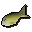
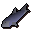
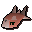
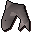

Harrys Fishing Shop.
Inventory config
fishingshop2Run by  Harry. Open in knowledge graph →
Harry. Open in knowledge graph →
Located in: Catherby
Stock
| Item | Stock | Value | Sells for |
|---|---|---|---|
| 5 | 5 gp | 5 gp | |
| 5 | 5 gp | 5 gp | |
| 2 | 5 gp | 5 gp | |
| 2 | 20 gp | 20 gp | |
| 1200 | 3 gp | 3 gp | |
| 5 | 20 gp | 20 gp | |
| 0 | 5 gp | 5 gp | |
| 0 | 10 gp | 10 gp | |
| 0 | 15 gp | 15 gp | |
 Raw mackerel | 0 | 17 gp | 17 gp |
 Raw cod | 0 | 25 gp | 25 gp |
| 0 | 15 gp | 15 gp | |
| 0 | 100 gp | 100 gp | |
| 0 | 150 gp | 150 gp | |
 Raw bass | 0 | 120 gp | 120 gp |
| 0 | 200 gp | 200 gp | |
 Raw shark | 0 | 300 gp | 300 gp |
Shop sells at 100.0% of item value and buys at 70.0%.